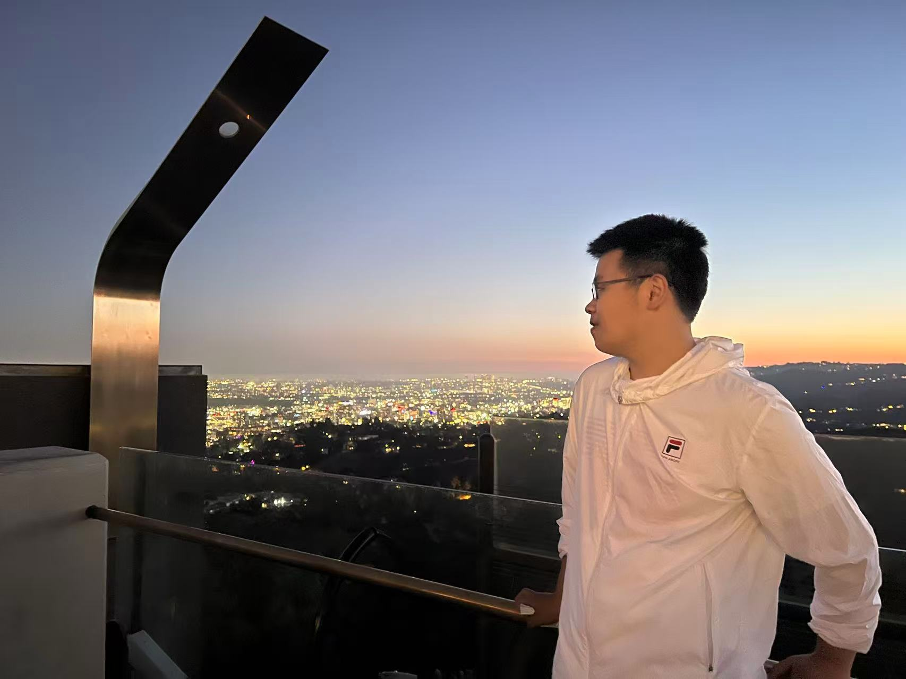
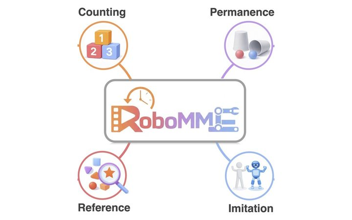
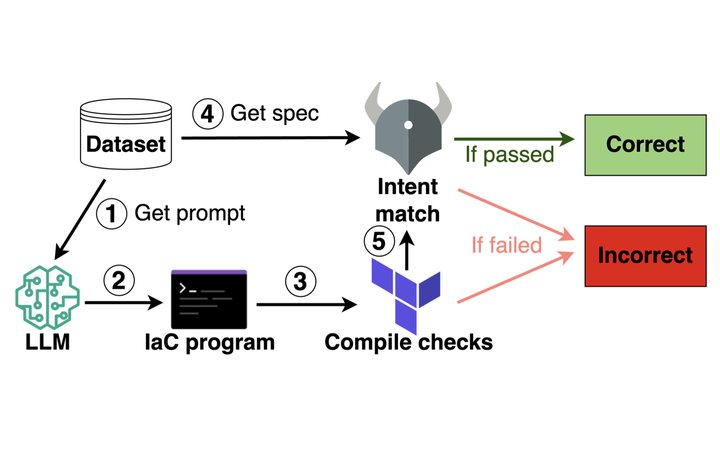
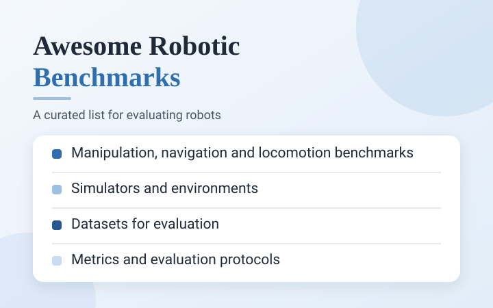

Human demo
Robot policy
Haoran Zhang
PhD Student in Robotics at MBZUAI
Abu Dhabi, UAE Haoran.Zhang@mbzuai.ac.ae
I am a PhD student in Robotics at MBZUAI, advised by Prof. Eric Xing. I received my Master's and Bachelor's degrees in Computer Science (and Data Science) from the University of Michigan (Go blue!!), where I was advised by Prof. Chad Jenkins.
In summer 2026, I was a research intern at Unitree Robotics, working on humanoid robots and dexterous hands. Before that, I was a research intern in the CLeAR Lab at the National University of Singapore, advised by Prof. Harold Soh. I have also been collaborating remotely with Shanghai AI Lab under the supervision of Xudong Xu.
My research focuses on robot learning and dexterous manipulation, enabling robots to acquire human-level manipulation skills by learning from human demonstrations. My long-term goal is general-purpose robots that help people and benefit society.
I am deeply grateful to my peer advisors — Boyang Wang, Yinpei Dai, and Ce Hao — for their generous guidance, connection, and mentorship throughout my PhD application journey and research growth. Thank you!

News
-
Award I led our team to 2nd place in Track 2 (Robotic Grounding) and the Track 2 Industry Innovation Award at the NVIDIA Video-to-Data (V2D) Challenge, announced at the CoRL 2026 tutorial in Austin. Our entry is built on DexDuet.
-
Excited to start my research internship at Unitree Robotics this June, working on humanoid robots and dexterous hands!
-
I will be joining MBZUAI as a PhD student. Looking forward to the next chapter!
-
Honored to serve as a Workflow Chair at AAAI 2026!
Publications
* equal contribution

NeurIPS 2024Datasets & Benchmarks Track
IaC-Eval: A Code Generation Benchmark for Cloud Infrastructure-as-Code Programs
Honors & Awards
Human demo
Our robot policy
2nd Place, Track 2
Industry Innovation Award, Track 2
Team Leader
NVIDIA Video-to-Data (V2D) Challenge, CoRL 2026 Tutorial
I led our team in Track 2 (Robotic Grounding), where human–object interaction demonstrations are turned into policies for a Unitree G1 humanoid with Dex3 hands, from clean multi-view capture to noisy reconstructions. Our entry is built on DexDuet. Shown: a human demonstration (left) and our final policy reproducing it in simulation (right).
Task data: NVIDIA V2D Challenge dataset (CC BY 4.0), rendered in our simulation rollout.
Projects

Open source
Awesome Robotic Benchmarks
A curated list of robotic benchmarks, datasets, simulators and evaluation suites, to make it easier to discover, compare and choose benchmarks across robotics areas. Contributions welcome!
Experience & Education
-
PhD Student in Robotics, advised by Prof. Eric Xing. Previously rotated in Prof. Xingxing Zuo's RCL Lab.2026 – Present
-
Research Intern, humanoid robots and dexterous handsJun – Aug 2026
-
Research Intern, advised by Prof. Harold SohJun – Dec 2025
-
Remote research collaboration, supervised by Xudong Xu
-
M.S. in CS; B.S. in CS and DS. Advised by Prof. Chad Jenkins.B.S. 2024 · M.S. 2026
Service & Teaching
Teaching
- Graduate Student Instructor, Autonomous Robotics (EECS 367), University of Michigan · Jan–May 2025
- Instructional Assistant, Autonomous Robotics (EECS 367), University of Michigan · Jan–May 2024